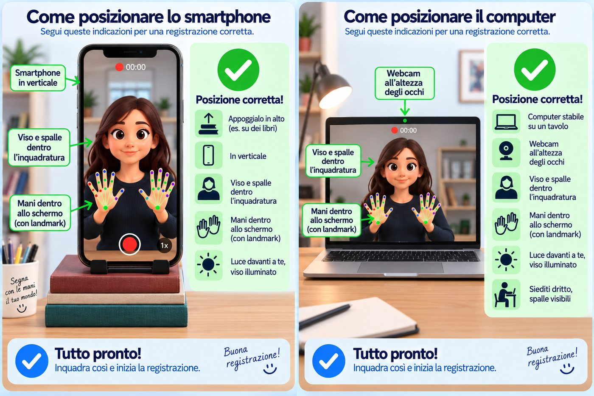

🔞 Meno di 18 anni? Non registrare qui.
🔤 Solo lettere e numeri, senza spazi.

🔍 Tocca l'immagine per ingrandirla
↻ Puoi fermarti e tornare
👀 Francesco → 🤟 tu. Segno uguale? Registra.
👀 Francesco → 🤟 tu. Stessi segni, stesso ordine.